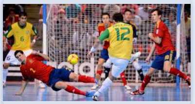
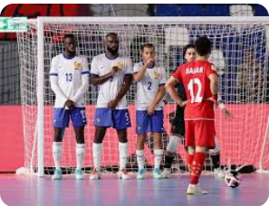

¿Quiénes somos?
Somos una página dedicada a la historia y el mundo del fútbol, desde sus orígenes hasta el deporte que mueve al mundo entero.

Historia
Conoce los orígenes del fútbol y cómo se convirtió en el deporte más popular del mundo

Origen
El fútbol nació en Inglaterra y se extendió por todo el mundo gracias a su pasión y emoción

Entrenamiento
La disciplina y el entrenamiento constante son la clave para convertirse en un gran futbolista